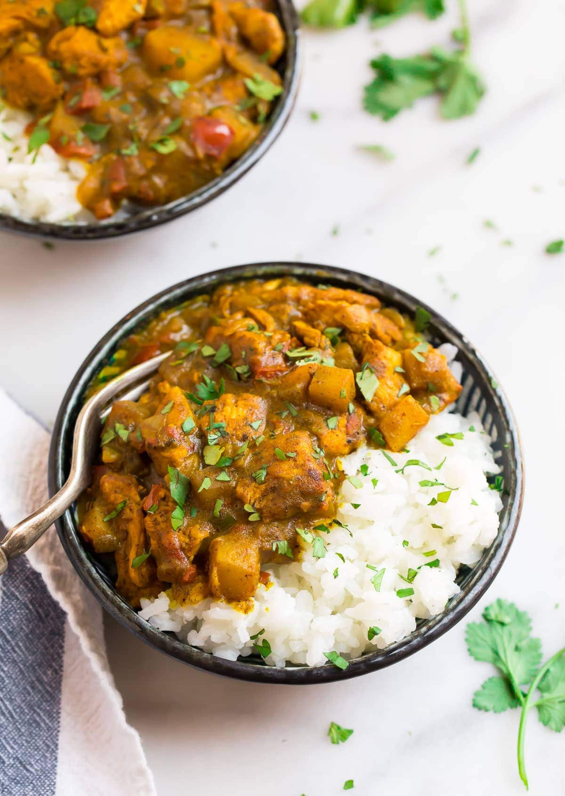

Curry Chicken

Description
Surprise yourself and impress family and friends with this easy-to-follow, delicious Jamaican Curry Chicken recipe.
With this recipe, you’ll learn how to cook Jamaican curry chicken that’s soft and juicy with, a rich gravy and a tantalizing flavour.
In the end, everyone will crown you the Curry King or Queen of the kitchen!
If I were asked to name one type of curry powder that I think is the best, I’d be very careful in answering. Here’s why –
because people are usually passionate about the curry powder they use and may get quite if your taste differs from theirs.
Some persons swear by a particular brand of curry powder and would never cook their curry chicken without it.
One reason may be that while growing up, they enjoyed a specific brand of curry powder and it reminds them of home.
For others, it is usually personal satisfaction that makes them prefer one type of curry powder over all others.
I believe it’s the curry powder that appeals to our senses that’s often the clear winner –
those that give a rich colour to our meat has a captivating smell, and also deliver deep flavour, is the one we stick with.
But did you know that ‘curry powder’ isn’t just one ingredient but a blend of spices? The common spices in curry powder are turmeric, cumin, coriander, fenugreek, and cardamom.
If you’re now wondering what differentiates the types of curry powders,
I’ll tell you. What distinguishes Indian, Trinidadian, Jamaican, and Guyanese curries are simply the unique spices that’s added to these base ingredients to make it their ‘own’.
This is why there are many different, yet wonderfully tasty ways of making curry dishes.
So to give you my answer to which type of curry is the best, I’d say my best ‘curry powder’ is actually a mix of different blends and not just one type.
I tend to mix Jamaican and Indian curry powder blends, then create an even more unique flavour by adding fennel seeds and more cumin.
Ultimately, we all have our preferences and love different types of curry powders for different reasons, and that’s quite ok.
Ingredients
- 1 whole chicken cut into small pieces
- 1 tbsp salt or to taste
- 1 tsp black pepper
- 1 tsp thyme leaves dried
- 1 tsp ground allspice
- ½ tbsp onion powder unsalted
- ½ tbsp garlic powder unsalted
- ½ tbsp ginger powder or small ginger root, crushed
- ½ tbsp msg-free soya sauce optional
- 2 sprigs fresh thyme
- 2 - 3 stalks scallion
- ¼ - ½ small scotch bonnet pepper de-seeded, to taste
- 1 inch thick gingerroot crushed
- 1 medium onion diced
- 6 seeds pimento
- 4-6 cloves garlic chopped
- ¼ medium green bell pepper diced
- ½ small tomato diced
- ½ medium irish potato diced, (optional)
- 1 - 2 tbsp vegetable oil
- 1 tbsp butter optional
Curry Powder Mix
- 3 tbsp curry powder
- ½ tbsp cumin powder
- 1 tsp turmeric powder optional
Instructions
- Prep the chicken by cutting it up into small bite-sized pieces and washing it in vingar or lime water.
- After draining the chicken, season it with salt, soya sauce, black pepper, allspice, thyme leaves, pimento seeds, onion powder, garlic powder and ginger powder.
- Prep the fresh seasonings, add to a bowl and mix thoroughly.
- Separate the chopped fresh seasoning in halves then and add a half portion to the chicken. Set aside the remaining half of the seasoning for making the gravy.
- In a small bowl, mix the curry powder, tumeric and cumin powder.
- Remove 1 tablespoon of the curry powder mixture and set aside for 'burning'.
- Add the remaining curry powder mixture to the chicken.
- Thoroughly rub all the seasoning into the chicken by hand or by using a large utensil.
- Cover the bowl of seasoned chicken and let it marinate for 2 - 8 hours or move immediately to the next step.
- Heat the cooking oil (and butter) on medium-low heat in a large skillet then add the 1 tablespoon of the curry powder mix that was set aside for 'burning'. Stir the mix quickly and thoroughly in the hot oil for approximately 15 seconds.
- Add the seasoned chicken to the pot, stir it, then cover the pot and let cook on medium-high heat for 5 minutes.
- After 5 minutes, add 1 cup water, stir it, then cover the pot and let it cook for 10 minutes.
- After 10 minutes, stir the pot then add enough boiling water to cover the chicken. Stir the chicken once more.
- Cover the pot and let the chicken cook on high-heat for 20 minutes. Remember to stir the pot every 10 minutes, and ensure the water doesn’t dry out too much.
- If the water dries out 1 - 2 cups of water.
- After 20 minutes, add the potatoes, the second portion of chopped seasoning and 1 - 2 cups boiling water and stir. Cover the pot and cook for a further 8 -10 minutes.
- Taste a small piece of the chicken to test if the curry chicken has the desired amount of salt. You may add a 1/4 of a chicken bouillon cube or 1/2 tsp salt if needed.
- Reduce the heat to medium/medium-low, stir the pot, then partially uncover it to allow the gravy to thicken (approximately 5 minutes).
- Bless up and enjoy it!